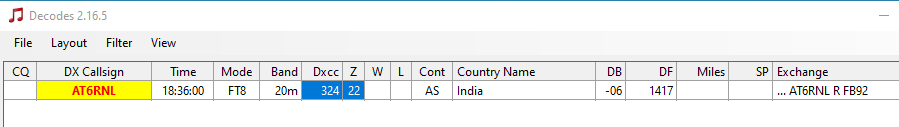

On Tue, Sep 22, 2020 at 11:52 AM Rob via Chat <chat@ncdxc.org> wrote:
_______________________________________________I quite often see call sign decodes in FT8 that are not in the QRZ call sign database. The grid squares are typically somewhere out at sea so wondering if these are maritime mobile transmissions.Here is an example of one on 20m today:
FB92 grid square is in Antartica:Thoughts?73,Rob - AG6RK
Chat mailing list
Chat@ncdxc.org
http://mail.ncdxc.org/mailman/listinfo/chat_ncdxc.org